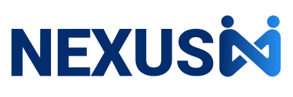

아홉 가지 시안 중 마음에 드는 방향을 선택해 주세요. 메뉴와 내용은 동일하며 디자인 콘셉트만 다릅니다.
DESIGN 01
큰 타이포그래피와 그래픽 배경 중심의 구성.
우측의 DESIGN 버튼으로 색상 테마(A/B/C)도 바꿔볼 수 있습니다.
DESIGN 02
실제 사무실·인물 사진으로 화면을 구성한
밝고 신뢰감 있는 기업 사이트 스타일.
DESIGN 03
네이비와 민트, 사람 중심 메시지를 결합한
현대적이고 균형 잡힌 대표 HR 스타일.
DESIGN 04
코랄 포인트와 부드러운 곡선으로 구성한
따뜻하고 친근한 인재 중심 스타일.
DESIGN 05
블랙과 라임, 강한 타이포그래피를 활용한
젊고 선명한 에디토리얼 스타일.
DESIGN 06
화이트와 블루, 정돈된 정보 구조를 사용한
깨끗하고 미래지향적인 HR 스타일.
DESIGN 07
딥 그린과 크림, 아치형 사진 프레임으로 구성한
사람과 성장 중심의 유기적인 스타일.
DESIGN 08 · RECOMMENDED
유행보다 신뢰와 사람 중심의 메시지에 집중한 완성형 HR 디자인.
네이비·아이보리와 절제된 사진 구성으로 오래 사용해도 안정적인 시안입니다.
DESIGN 09 · NEW
사람의 이야기와 질문·답변을 중심으로 구성한 HR 매거진형 디자인.
베이지·버건디·차콜 색상으로 기존 시안과 완전히 다른 감성을 전달합니다.
주식회사 넥서스엔 · 홈페이지 리뉴얼 시안 검토용 페이지